About Lycia
The land of the Lycians
Lycia is the mountainous peninsula on the south-west coast of Turkey between Fethiye and Antalya. Here the Taurus Mountains drop steeply into the Mediterranean; just a few kilometres behind the bays, peaks rise above 3,000 metres. In between lie pine forests, terraced fields, mountain villages – and, at every turn, the traces of an ancient culture.


A people with its own language and its own league
The Lycians were a distinct people with their own language, related to Luwian, and their own script. Homer already names them in the Iliad as allies of Troy. Around 546 BC the Persians conquered the land; according to Herodotus, the people of Xanthos set their city on fire and chose death rather than surrender. Alexander the Great, his successor kingdoms and Rhodes followed. In the 2nd century BC the cities joined together in the Lycian League – one of the earliest known federal states with elected representatives whose votes depended on the size of their city. The six largest, Xanthos, Patara, Pinara, Tlos, Myra and Olympos, each had three votes. Montesquieu praised this model, and the framers of the American Constitution referred to it as well. In AD 43 Lycia became a Roman province.

.jpg){kind=link}
Places along the way
What the Lycians left behind is everywhere: tomb façades carved into the rock as in Fethiye, ancient Telmessos, sarcophagi with pointed-arch lids in the middle of villages and harbours, theatres, baths and city walls. Patara was the harbour and meeting place of the Lycian League and is the birthplace of Saint Nicholas, who later became Bishop of Myra. Xanthos and the sanctuary of the Letoon are UNESCO World Heritage Sites. In the bay of Kekova, parts of Simena and Aperlai lie under water, and Kaş stands on the remains of ancient Antiphellos.
Kate Clow and the Lycian Way

That all of this can be linked on foot today is thanks to the British author and amateur historian Kate Clow. She came to Turkey in 1989, settled in Antalya and began exploring old Roman roads, shepherds' paths and mule tracks, asking in the villages about the old connecting routes. The result was the Lycian Way (Likya Yolu), Turkey's first waymarked long-distance trail. With volunteers and the support of a Turkish bank she marked the route with the red-and-white signs that accompany us along the way, opened it in 1999 and wrote the guidebook. Originally just over 500 kilometres long, from Ovacık near Fethiye to Geyikbayırı near Antalya, the trail has grown to around 760 kilometres with later additions. Since then, small guesthouses have opened in many villages.
Kate Clow later created further trails, such as the St Paul Trail, and in 2012 founded the Culture Routes Society (Kültür Rotaları Derneği), which today looks after many cultural hiking routes in Turkey.
We are walking the Lycian Way in stages: in 2025 from Fethiye to the Yediburunlar lighthouse, in 2026 from Bezirgan and Patara to Kaş.
24 September to 1 October 2025
Stage 1: From Fethiye to the Yediburunlar lighthouse
Our first Lycian hike in September 2025: arrival in Ölüdeniz, a boat trip to Gemiler Adası and four hiking days from Fethiye via Kayaköy and Faralya to the Yediburunlar lighthouse – with a 30th wedding anniversary along the way.
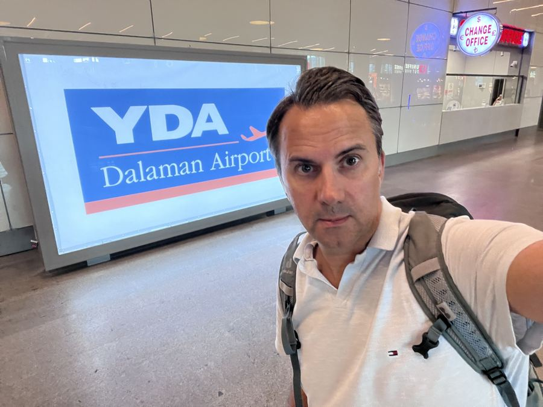
Arrival
Arriving in Ölüdeniz
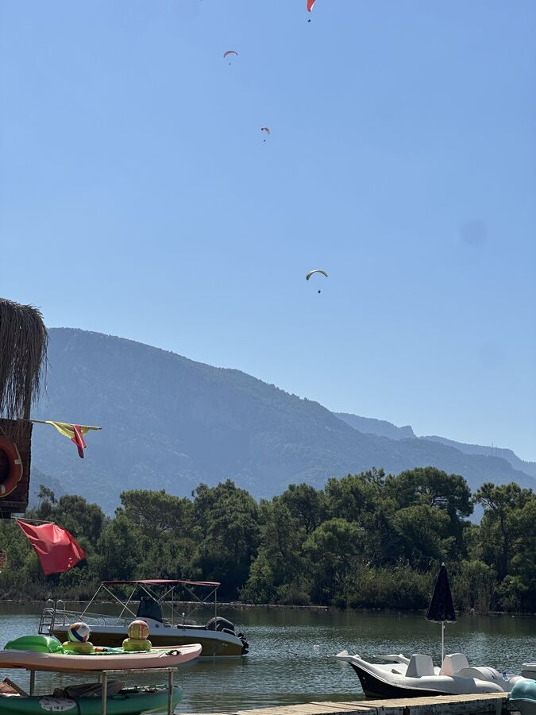
Ölüdeniz
A day at the Ölüdeniz lagoon – and a twisted ankle while jogging
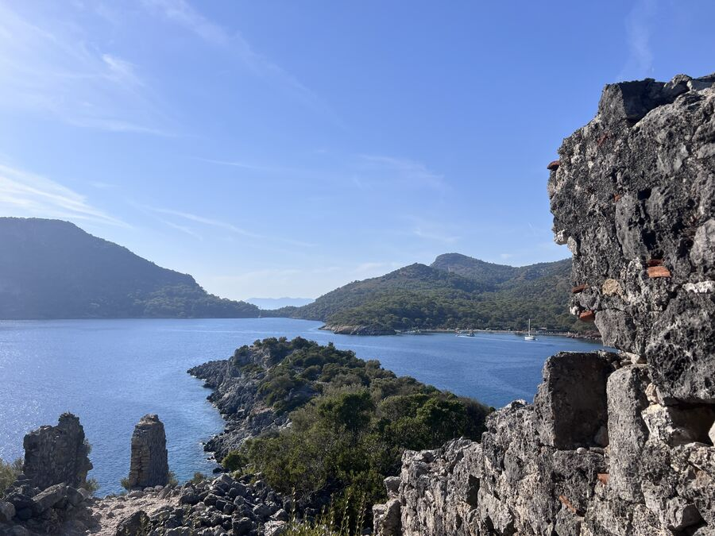
Boat trip
Boat trip to Gemiler Adası, the island of Saint Nicholas
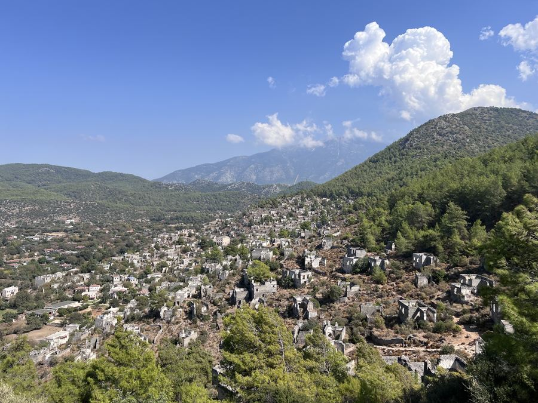
Hiking day 1
Rock tombs, an abandoned village and the way to Ölüdeniz
6.13 km286 m ↑
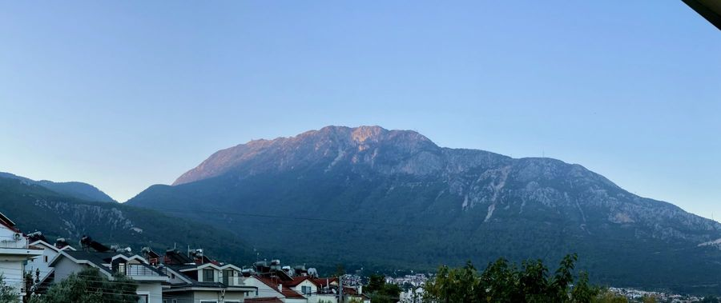
Hiking day 2
High above Ölüdeniz and lunch in Karaağaç
10.37 km532 m ↑
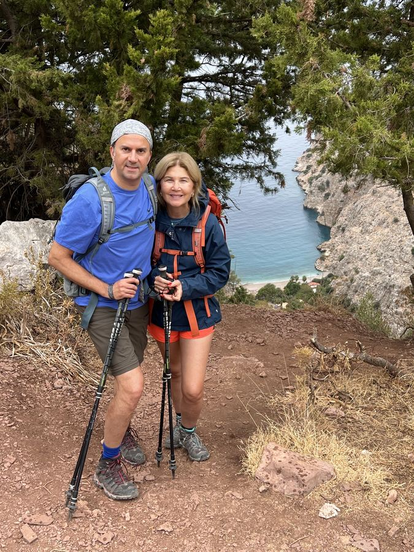
Hiking day 3
Rain above the Butterfly Valley – and a 30th wedding anniversary
10.88 km373 m ↑
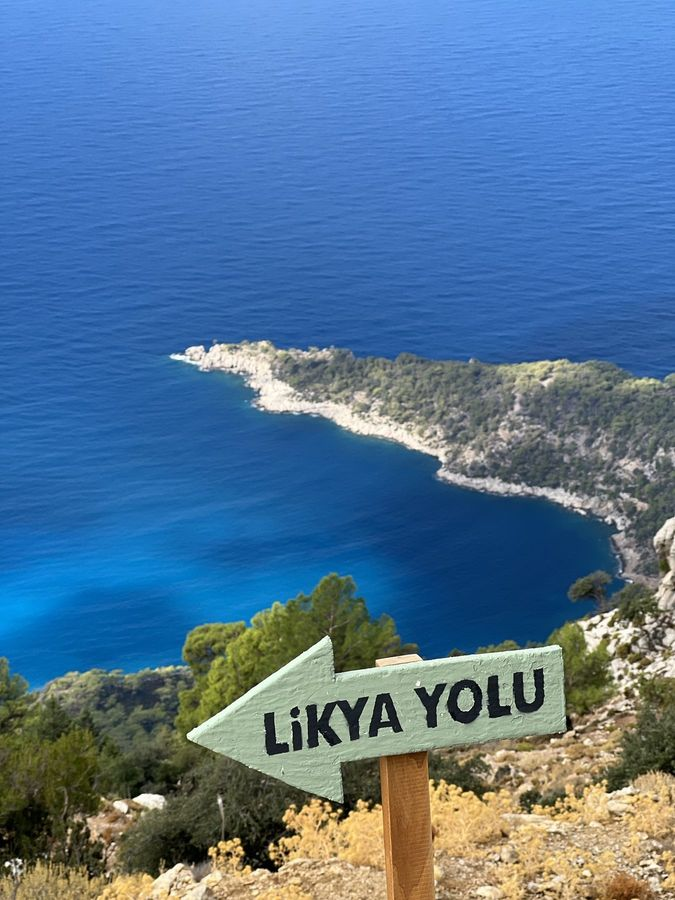
Hiking day 4
From the old tree to the Yediburunlar lighthouse
6.09 km336 m ↑
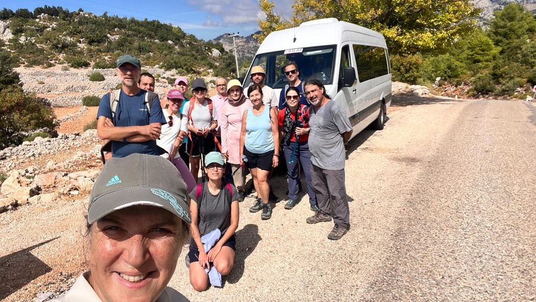
Looking back
The journey home and a look back
23 to 30 October 2026
Stage 2: From Patara via Aperlai to Kaş
After a bumpy start, three hiking days between Bezirgan, Patara, Apollonia, Aperlai and Limanağzı plus a boat trip through Kekova – then rainy days in Kaş and an art-filled finale in Fethiye.

Arrival
A bumpy start

Tour day 1
The day we missed

Hiking day 1
The granaries of Bezirgan and ancient Patara
9.54 km292 m ↑

Hiking day 2
From Apollonia down to Aperlai – and by boat through Kekova
7.01 km41 m ↑

Hiking day 3
Via Çoban Plajı to Limanağzı – and on to Kaş
8.85 km265 m ↑
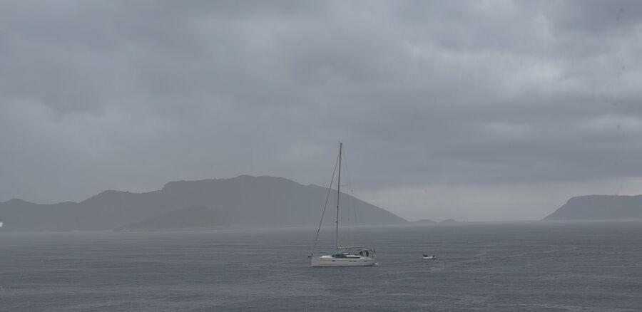
Kaş
Rain instead of a boat trip
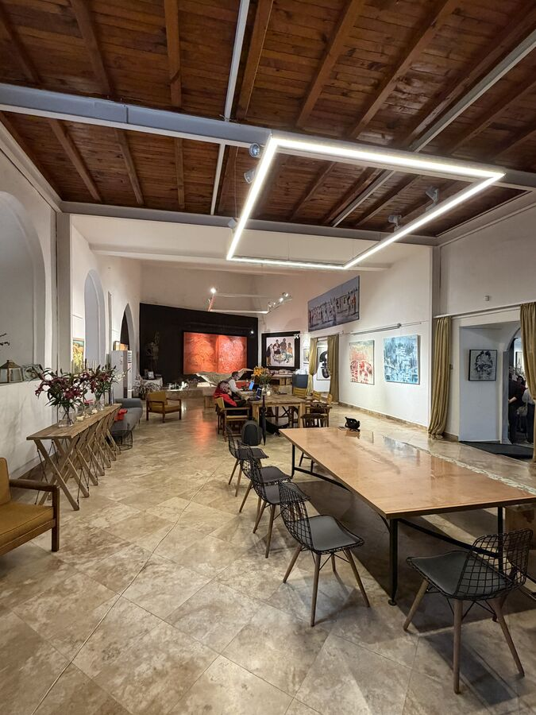
Fethiye
An art-filled finale in Fethiye
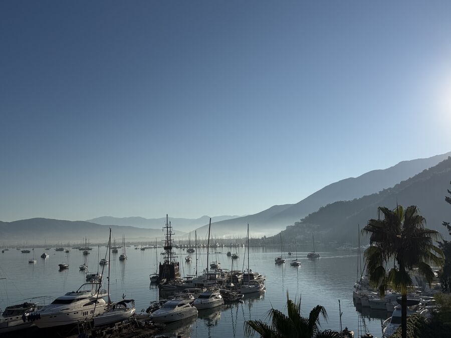
Looking back